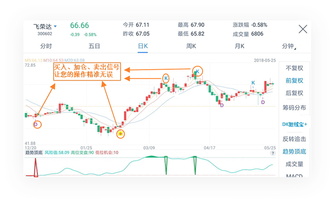
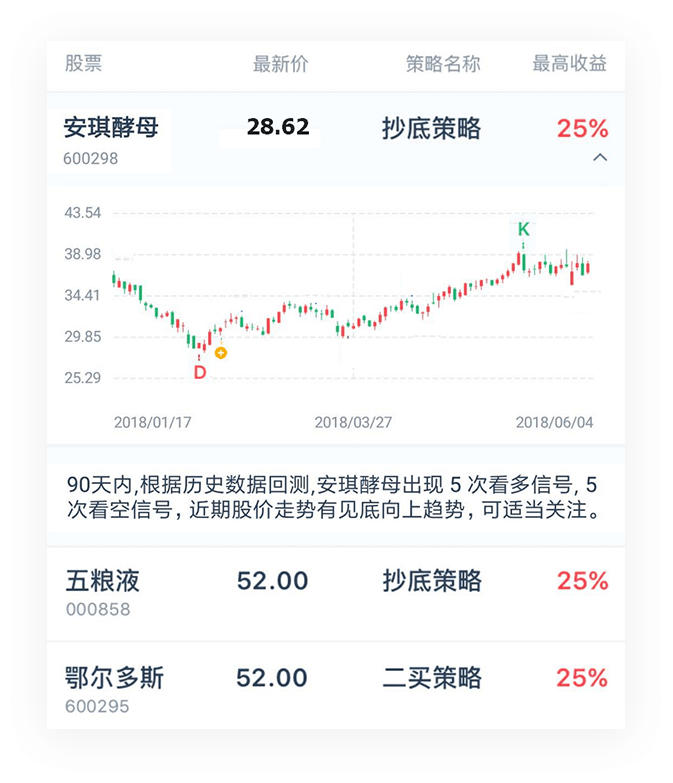

DK短线宝+是在原有DK短线宝的基础上新增加仓信号和趋势顶底指标。运用量化思想，进行多维度研判，使多空信号更精准，买卖操作更简单。
更新时间：每个交易日收盘后
从出现买点信号或加仓信号的股票中优中选优，并结合趋势顶底算法进行深度分析，按照信号强度优选金股并组成点金池。
每日金股最多精选10只
DK短线宝+新增了趋势研判指标——趋势顶底，可研判个股趋势，同时买点、加仓、卖出信号进行共振联动，并通过红绿柱提示该股是否出现抄底时机或逃顶时机。
同时，点金池每日都将优中选优，依据策略模型推送10只金股。
